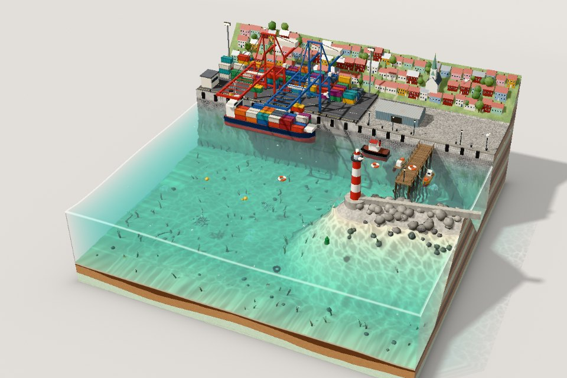
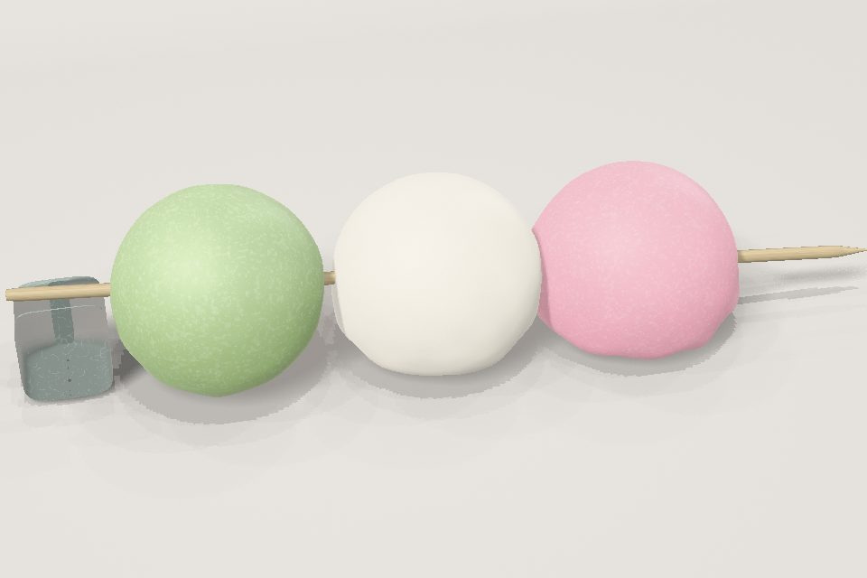
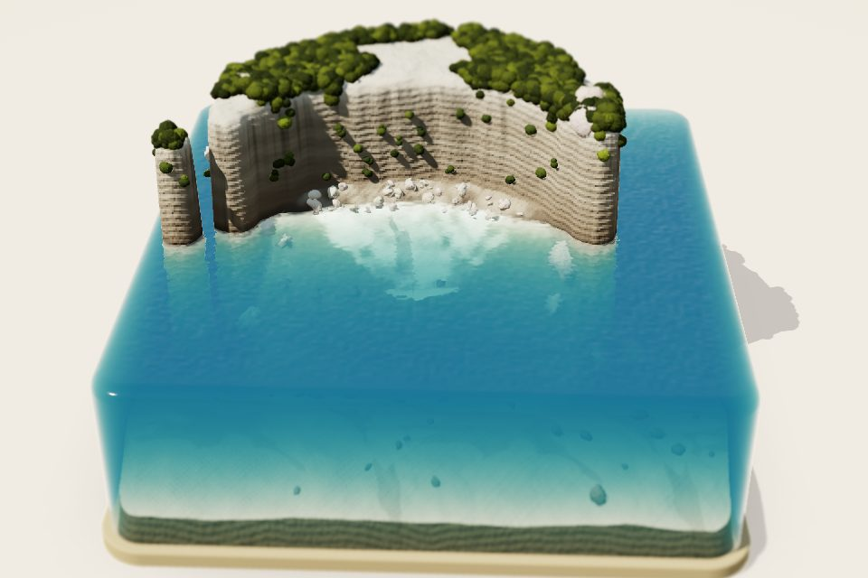
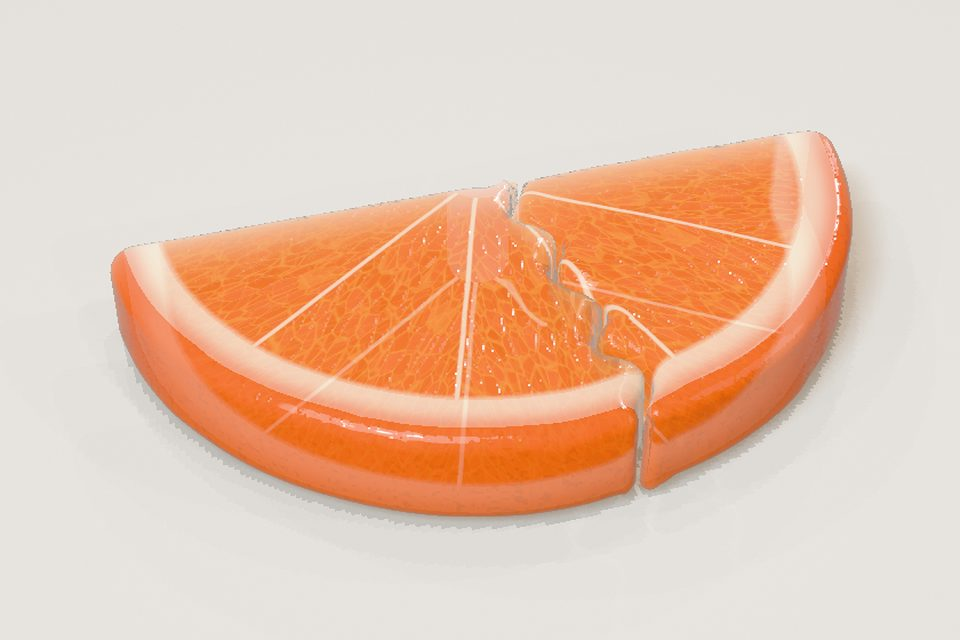
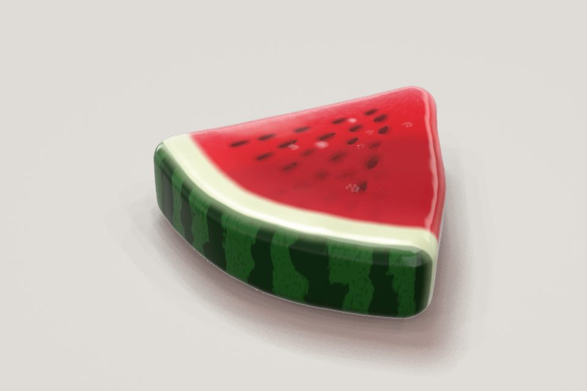

Small interactive studies of soft things, light and water. Each one is a single page that runs in your browser: stretch it, cut it, stir it.

A working harbour in a wobbly block of sea. Cast the ship off, sound the horn, feed the fish, and tip the whole thing.

Three mochi on a skewer. Squish them, slide them off, stretch them until they tear, and stick them back together.

A procedural limestone island sealed in a block of clear water. Run a finger over the surface and watch it answer.

A gummy orange slice to stretch, slice with a nakiri or a crinkle cutter, and stamp with cookie cutters.

A wobbly watermelon jelly slice you can pull, flick and cut into pieces with a knife.